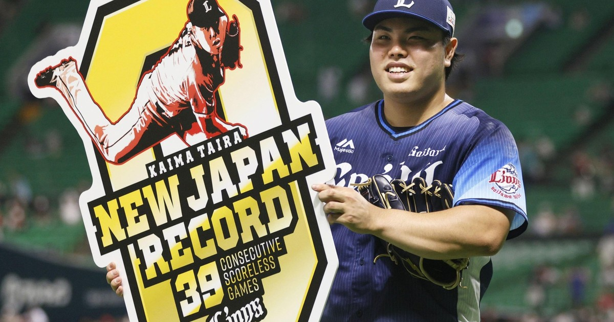

Blue Jays land Japanese ace Kaima Taira on five years, $80 million — the pivot after losing Skubal, Rogers and Peralta
Toronto lost out on three pitchers in three days, then pivoted to Japan: Kaima Taira is a Blue Jay on a five-year, $80 million deal.

Disclosure: this post contains affiliate links. I earn a commission on qualifying purchases.
The move
Toronto finally landed a pitcher — just not one of the three it chased first.
The Blue Jays agreed to terms with Japanese right-hander Kaima Taira on Tuesday, the New York Post's Jon Heyman first reported, with ESPN's Jeff Passan, Reuters and USA Today all confirming the agreement. The deal runs five years and includes a $5 million signing bonus and an opt-out after the third season, which would put Taira back on the market before he turns 30. Toronto also owes the Seibu Lions a posting fee of about $13.9 million on top of the contract.
It is the Jays' answer to a brutal three days. They offered Tarik Skubal nine years and $420 million and watched him take $450 million from the Mets. They went after Trevor Rogers, who signed with the Cubs. They went after Freddy Peralta, who signed with the Orioles. Taira costs roughly a sixth of what Skubal got, and with the collective bargaining agreement expiring Dec. 1 and a lockout expected to follow, Toronto did not have time to wait for the market to come back around.
The player
Taira is 27, and he arrives with a resume that reads like two different pitchers stapled together — because it is.
He spent most of his career in Japan moving between the rotation and the bullpen. A year ago he was Seibu's closer and saved 31 games. This season, finally left in the rotation for a full year, he went 12-5 with a 1.36 ERA in 23 games, striking out 141 batters in 146 innings — the lowest ERA of any qualified starter in Japan. He is the first pitcher in Nippon Professional Baseball history to save 30 or more games in one year and win 10 as a starter the next.
The career line backs it up: 37-24 with 62 saves and a 1.85 ERA in 325 appearances, with 620 strikeouts against 226 walks in 592 innings. He was the Pacific League Rookie of the Year in 2020 and a four-time NPB All-Star, and in July 2021 he set an NPB record with 39 consecutive scoreless appearances. In April 2025 he closed out a combined no-hitter with Tatsuya Imai against SoftBank.
The stuff is the selling point. He is 5-foot-8, pitches only from the stretch, and works from a low arm angle with a high-effort delivery — but his release point sits about 6.8 feet in front of the rubber, so his fastball gets on hitters faster than the radar gun suggests. It sits 95-96 mph and touches 99, and he throws as many as seven pitches, with the splitter the one hitters chase most. The question scouts keep asking is the one his frame invites: whether a 5-foot-8 starter with that much effort in his delivery can hold up across a full major league season.
The fit
Toronto knows exactly how much pitching it needs. The Jays went into 2026 with eight starters, and the injuries piled up fast — Trey Yesavage, Shane Bieber and Jose Berrios all opened the year on the injured list, and Cody Ponce and Max Scherzer went down soon after. The club finished last in the AL East a year after its run to the World Series.
Taira likely slots into the third spot in the 2027 rotation, behind ace Dylan Cease — who finished second in AL Cy Young voting after striking out 239 batters in the first year of his seven-year, $210 million deal — and alongside Jose Soriano, Yesavage, Ponce and Spencer Arrighetti. He also gives the Jays something they have not had in a while: a pitcher who can start and, if the rotation ever gets healthy, close.
What it means
This is a bet on translation. The Jays paid a fraction of the Skubal price for a pitcher who dominated the best league in Japan in his first full year as a starter, and the opt-out after year three means Taira is betting on himself too — pitch like he did for Seibu, and he is a free agent again at 29. If the ERA holds up in the American League East, Toronto got a front-line starter for a middle-of-the-rotation price. If it doesn't, the Jays are the team that lost three pitchers in three days and settled for the fourth.
Sources
• Reports: Jays, RHP Kaima Taira agree to 5-year, $80M deal (Reuters)
• Who is Kaima Taira? Blue Jays sign Japanese ace for $80M (USA Today)
• Blue Jays land Japanese star pitcher Kaima Taira on $80M deal (New York Post)
• Report: Blue Jays land Japanese star Taira on 5-year, $80M (theScore)
• Blue Jays Make Bold Bet on Kaima Taira After Dominant 2026 Season (Sports Illustrated)
• MLB Free-Agent Tracker 2026 (Bleacher Report)
Gear up: Fanatics